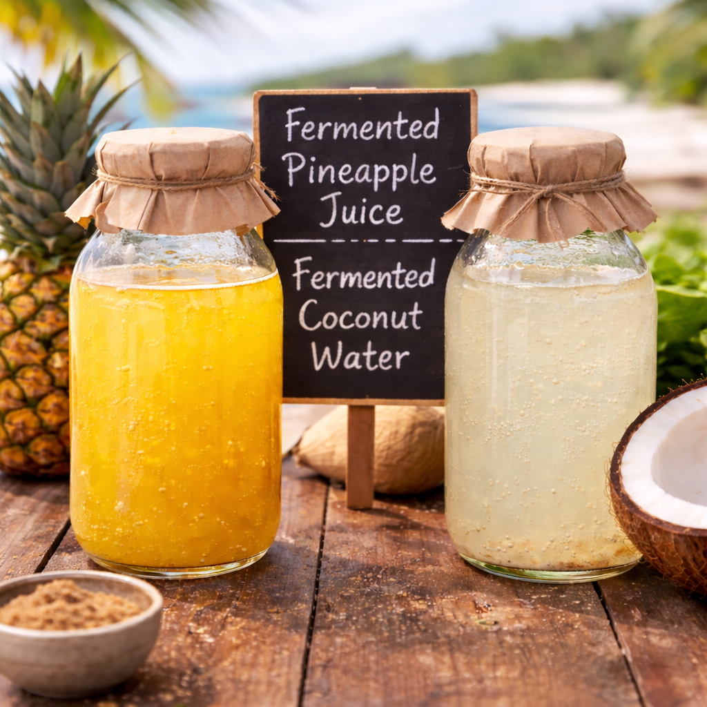
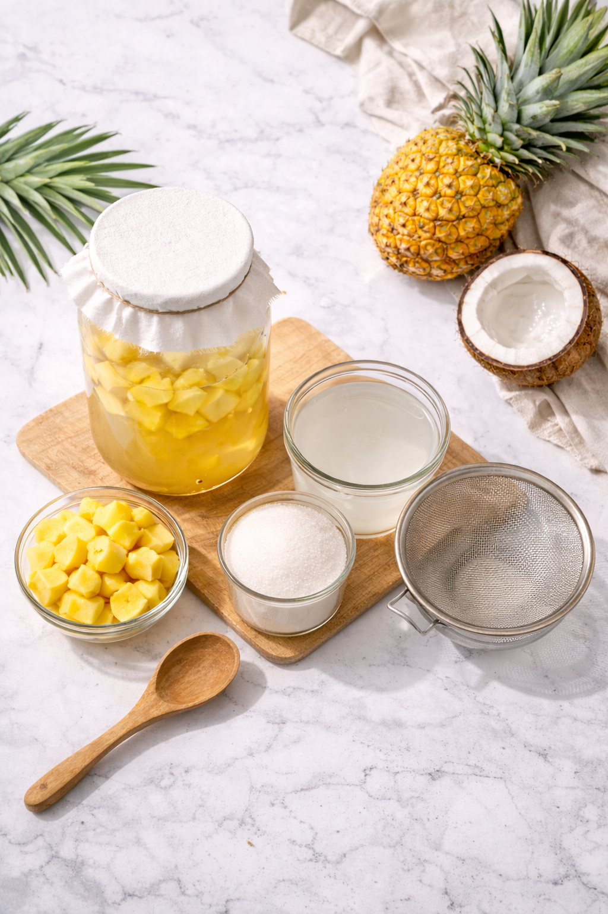

Produk ini merupakan minuman fermentasi yang dibuat dari
bahan alami, yaitu sari buah nanas dan air kelapa.
Kedua bahan tersebut dipilih karena memiliki rasa yang
segar serta kandungan gula alami yang mendukung
proses fermentasi.
Melalui proses fermentasi, minuman ini menghasilkan
perpaduan rasa manis dan sedikit asam yang memberikan
sensasi segar saat diminum. Aroma buah yang khas juga
menambah daya tarik dari minuman ini.
Dengan bahan alami dan cita rasa yang unik, minuman
fermentasi ini dapat menjadi pilihan minuman yang
berbeda dan menyegarkan untuk dinikmati kapan saja.

Pembuatan minuman fermentasi sari buah alami ini sangat mudah untuk dibuat,
tentunya dimulai dengan bahan dasar. Untuk membuat, dibutuhkan alat
yaitu 4 buah toples kaca besar, blender, saringan,
sendok, dan toples kaca kecil. Untuk bahannya cukup menyediakan
buah nanas dan air kelapa serta gula pasir putih.
Pertama, haluskan buah nanas dengan blender dan saring lalu tuang
sebanyak masing-masing 450 mL sari buah nanas kedalam 2 toples kaca.
Untuk air kelapa, cukup menuangkan masing-masing 450 mL kedalam
dua toples kaca yang lainnya. Penyaring membantu memisah ampas dengan
cairan sari buah supaya tidak ada gumpalan-gumpalan saat diminum.
Kemudian masukkan gula pasir dengan takaran 40 gram dan 63 gram
untuk buah nanas, dan 67 gram serta 90 gram untuk air kelapa.
Tunggu selaam 5 hari supaya proses fermentasi bisa berjalan.
Buka tutup toples setiap harinya di jam yang sama supaya bisa di aduk
dan cairan dengan busa bisa menyatu kembali. Konsentrasi gula yang lebih
sedikit akan menghasilkan rasa dan aroma yang lebih kuat, sedangkan konsentrasi
gula yang lebih banyak akan menghasilkan hasil yang kurang optimal
pada hari ke 5 tapi tetap terasa rasa dan aroma khas fermentasinya.
Setelah 5 hari berlalu, buka toples satu-satu dan saring ke
dalam toples yang lebih kecil supaya produk akhir akan
berbentuk cairan yang dapat diminum.